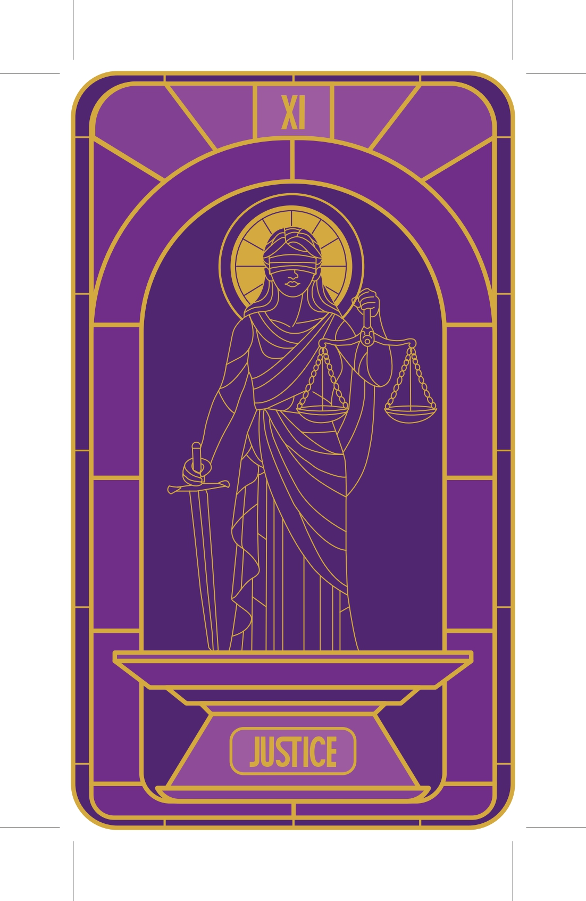
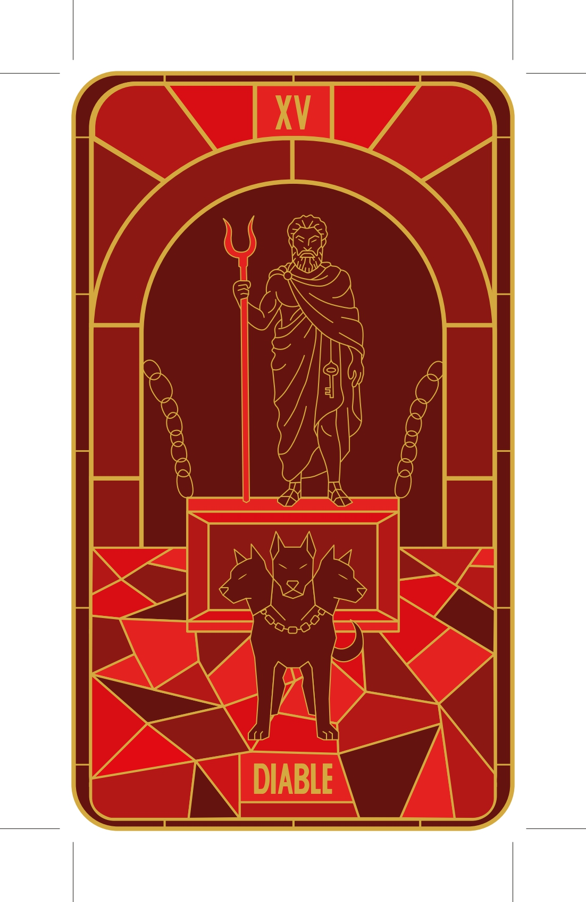
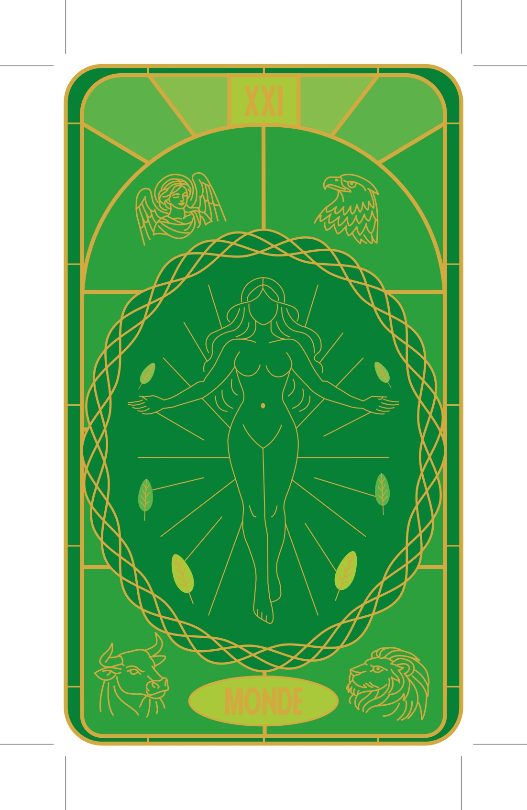
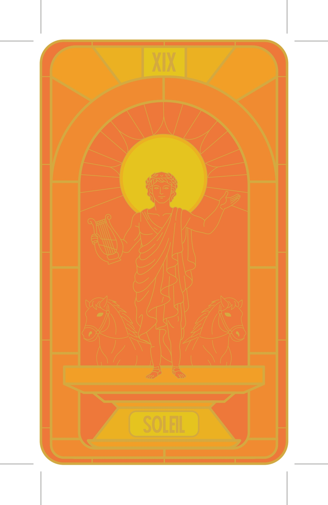
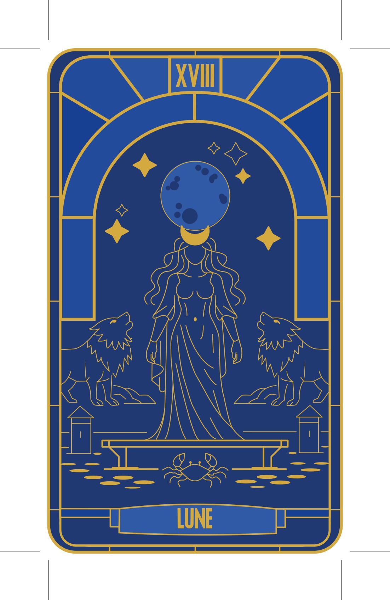
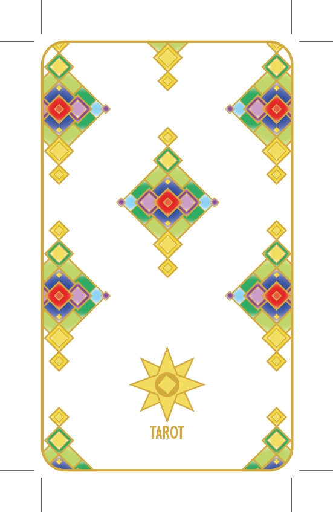

Le Brief
Réalisation de cinq cartes de tarot : Justice, Diable, Monde, Soleil et Lune.
J'ai réalisé ces cartes de tarots en m'inspirant de l'Art Déco, des vitraux et des Dieux.
Réalisation de cinq cartes de tarot : Justice, Diable, Monde, Soleil et Lune.
J'ai réalisé ces cartes de tarots en m'inspirant de l'Art Déco, des vitraux et des Dieux.
J'ai réalisé un moodboard pour définir l'esthétique et les éléments que j'allais choisir pour réaliser les cartes de tarot.

Pour la Justice, j'ai choisi de représenter Thémis, la déesse de la justice dans la mythologie grecque. J'ai voulu représenter la justice de manière équilibrée, avec des éléments de symétrie et d'harmonie, tout en intégrant des symboles liés à la justice, comme la balance et l'épée.

Pour le Diable, j'ai choisi de représenter Arès, le Dieu de la guerre dans la mythologie grecque. J'ai voulu représenter le Diable de manière dramatique, avec des éléments de conflit et de puissance, tout en intégrant des symboles liés à la guerre, comme le bident et le chien cerbère.

Pour le Monde, j'ai choisi de représenter Gaïa, la déesse de la Terre dans la mythologie grecque. J'ai voulu représenter le Monde de manière harmonieuse, avec des éléments de nature et de vie, tout en intégrant des symboles liés à la terre, comme les plantes et les animaux.

Pour le Soleil, j'ai choisi de représenter Hélios, le Dieu du soleil dans la mythologie grecque. J'ai voulu représenter le Soleil de manière lumineuse, avec des éléments de rayonnement et de vitalité, tout en intégrant des symboles liés au soleil, comme les rayons ou les chevaux.

Pour la Lune, j'ai choisi de représenter Séléne, la Déesse de la Lune dans la mythologie grecque. J'ai voulu représenter la Lune de manière mystérieuse, avec des éléments d'ombre et de magie, tout en intégrant des symboles liés à la lune, comme la couronne d'or et les étoiles.

Pour le dos des cartes, j'ai choisi de représenter un motif inspiré des vitraux, avec des éléments de symétrie et de répétition, tout en intégrant des symboles liés à la divination, comme les étoiles. J'ai voulu créer un design qui soit à la fois esthétique et symbolique, en harmonie avec le thème de mes cartes.
